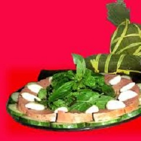

-
Chả bò Đà Nẵng
Từ lâu chả bò đã là món ăn Đà Nẵng nổi danh trên khắp xứ quảng bởi hương vị thơm ngon, đậm đà của nó. Chả bò Đà Nẵng là món quà thích hợp mang hơi thở đặc trưng của xứ quảng cho tất cả các du khách làm quà dành tặng người thân sau chuyến du lịch của mình.
Chả bò Đà Nẵng được làm từ 100% thịt bò tươi. Đặc điểm của món ngon đà nẵng này là hương vị thơm ngon, chất lượng. Cắt khoanh chả bò Đà Nẵng, khách sẽ thấy mùi thơm của rau thì là thoảng nhẹ, miếng chả có màu đỏ hồng, vị hơi ngọt nhưng cũng rất đậm đà, giòn và dai. Ăn chả bò phải kèm với dưa chua, nem... làm món khai vị trong các đám tiệc, còn ngày thường có thể là những món nhâm nhi tuyệt vời cho quý ông, món ngon ăn kèm bánh mì và ngon hơn nữa khi ăn cùng cháo bò.
Đặc biệt ăn món ăn Đà Nẵng này nhất thiết phải có tỏi tươi, hành tươi, rau thơm và có thể chấm thêm tương ớt hoặc nước mắm tỏi ớt tùy khẩu vị của mỗi người. Khi ăn vào miếng chả Đà Nẵng sẽ thấy rất đậm đà, cũng chỉ với nước mắm, muối, tiêu, đường và hành tỏi nhưng thêm vào chút tấm lòng người Đà Nẵng thì chả Đà Nẵng lại trở nên đậm tình.
Giờ đây, bạn không cần phải ghé thăm Đà Nẵng để thưởng thức món chả bò đặc biệt không nơi nào sánh được. Chả bò Đà Nẵng đã phát triển thương hiệu tên toàn quốc với chất lượng tuyệt hảo, an toàn vệ sinh.
Đi bất cứ nơi đâu bạn cũng có thể mua được đòn chả bò đặc sản Đà Nẵng. Tuy nhiên, tôi vẫn thích mua chả bò tại Đà Nẵng bởi dường như nơi khác vẫn còn thiếu chút chân tình của người dân xứ Quảng gửi vào đòn chả. Đấy mới thật sự là món ngon Đà Nẵng.
